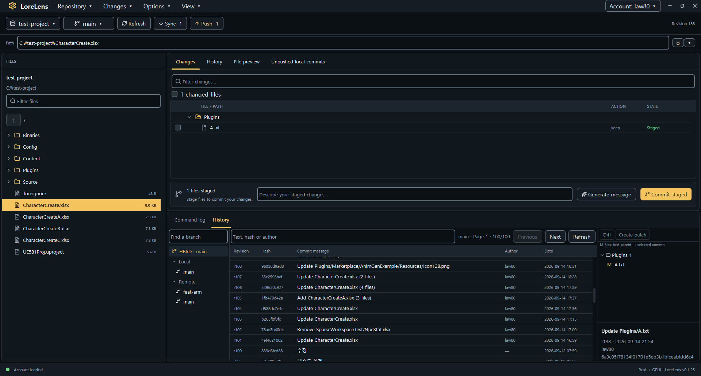

Start with your files
Browse files and folders, and select multiple items. Right-click to stage, discard, lock, or move files.
EXPLORE & ORGANIZESee every change. Know your next step.
Manage your Lore files, commits, and branches in one desktop app.

Browse files, select changes, and bring branches together.
Everyday repository tasks in a familiar interface.
Browse files and folders, and select multiple items. Right-click to stage, discard, lock, or move files.
EXPLORE & ORGANIZEInspect your changes in a diff and stage only the files you need. Commit locally, then push when you are ready.
REVIEW & COMMITFind local and remote branches in the current branch menu. Create branches, switch between them, and merge locally.
BRANCH & MERGEKeep track of local commits waiting to be pushed.
Review sync and push results in the details panel.
Open or clone a repository, then sign in with your Lore account.
Review your changes, stage your files, and create a local commit.
Sync remote changes and push your commits when they are ready.
Requires Rust stable, Visual Studio C++ Build Tools, and the Windows SDK.
For version control, you will also need the Lore CLI and a Lore repository.
cargo build --release
./target/release/lorelens.exe C:/path/to/repository01 / Connect the CLIChoose your Lore executable using Locate CLI… in the app.
02 / Sign inSign in through Lore Login, then select Refresh to load the repository status.
03 / Make it yoursChoose a System, Light, or Dark theme.